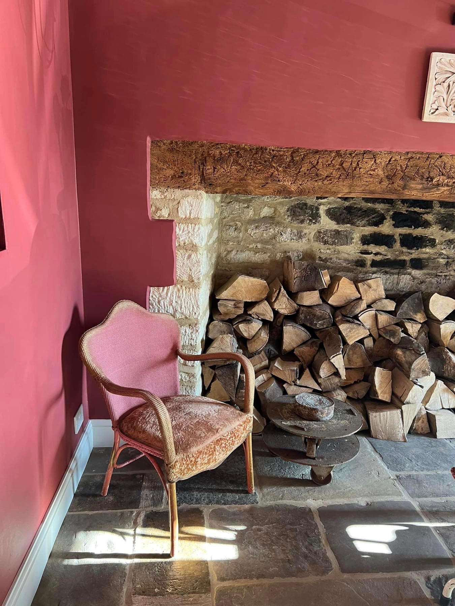
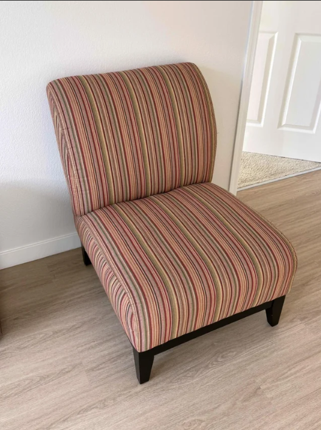
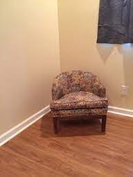
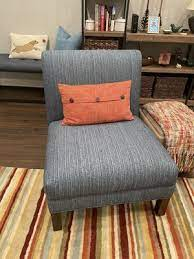

Photography Guidelines
A visual direction for how The Elegant House should be photographed.
The Elegant House photography style is warm, natural, and craft-focused. Images should feel timeless, calm, and authentic — never staged or artificial. The goal is to showcase detail, texture, and atmosphere in real spaces, using soft natural light and simple compositions.



Do — The Ideal Style
- Use soft, natural lighting.
- Focus on detail, texture, and craftsmanship.
- Photograph pieces in real, inviting environments.
- Highlight the quality of materials and the atmosphere of the space.



Don’t — Avoid These Styles
- Avoid harsh or artificial lighting.
- Do not photograph furniture in empty, unbalanced spaces.
- Avoid cluttered backgrounds and distracting compositions.
- Never use images that feel overly staged, trendy, or low-quality.